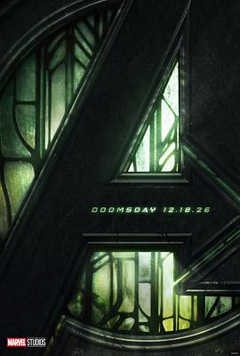

复仇者联盟5：毁灭之日 / Avengers: Doomsday
又名：复仇者联盟5 / 复仇者联盟5：末日降临(港) / 复仇者联盟：末日崛起(台) / 复仇者联盟5：毁灭日 / 复联5 / 复仇者联盟5：征服王朝 / 复仇者联盟5：康之王朝 / Avengers: The Kang Dynasty / Avengers 5
作品信息
| 导演 | 安东尼·罗素 / 乔·罗素 |
| 编剧 | 斯蒂芬·麦克菲利 |
| 主演 | 小罗伯特·唐尼 / 克里斯·埃文斯 / 克里斯·海姆斯沃斯 / 佩德罗·帕斯卡 / 凡妮莎·柯比 / 汤姆·希德勒斯顿 / 安东尼·麦凯 / 塞巴斯蒂安·斯坦 / 保罗·路德 / 约瑟夫·奎恩 / 艾邦·摩斯-巴克拉赫 / 萨迪·辛克 / 帕特里克·斯图尔特 / 伊恩·麦克莱恩 / 詹姆斯·麦斯登 / 凯尔塞·格拉玛 / 艾伦·卡明 / 丽贝卡·罗梅恩 / 查宁·塔图姆 / 弗洛伦丝·皮尤 / 大卫·哈伯 / 怀亚特·罗素 / 汉娜·乔恩-卡门 / 刘易斯·普尔曼 / 刘思慕 / 莱蒂希娅·赖特 / 温斯顿·杜克 / 泰诺克·乌尔塔 / 梅布尔·卡德纳 / 丹尼·拉米雷斯 / 海莉·阿特维尔 / 泰柔娜·派丽丝 / 尹迪亚·萝丝·海姆斯沃斯 / 凯瑟琳·纽顿 |
| 类型 | 动作 / 科幻 / 冒险 |
| 制片国家/地区 | 美国 |
| 语言 | 英语 |
| 上映日期 | 2026-12-16(中国台湾) / 2026-12-18(美国) |
| 片长 | 166分钟 |
| IMDb | tt21357150 |
说过什么
2026-01-01 16:12:53
广播 · 想看
最后一次看到是 2026-08-01T11:07:53+10:00 · 豆瓣原页